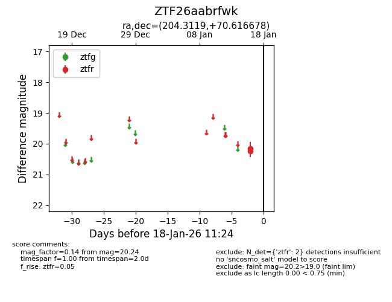
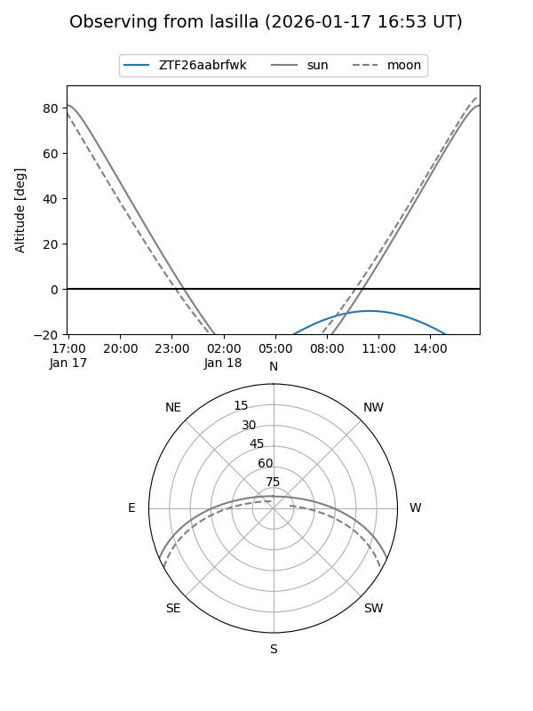
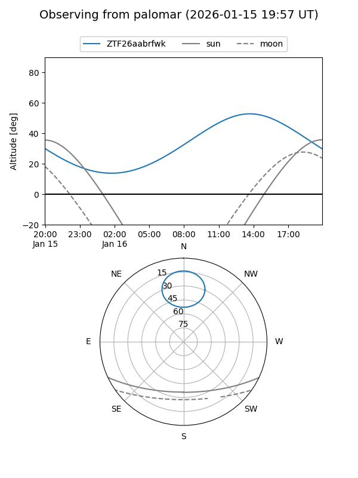

ZTF26aabrfwk
Target ZTF26aabrfwk at 2026-01-16 11:20
Aliases and brokers:
FINK: link
Lasair: link
ALeRCE: link
alt names
ZTF26aabrfwk (ztf,fink_ztf)
Coordinates:
equatorial (ra, dec) = 204.3119,+70.61668
equatorial (HMS+DMS) = 13:37:14.85,+70:37:00.04
galactic (l, b) = (117.4861,+46.02415)
Flags:
Photometry:
last ztfr=20.24
2 ztfr detections
Lightcurve

Visibility


Additional plots